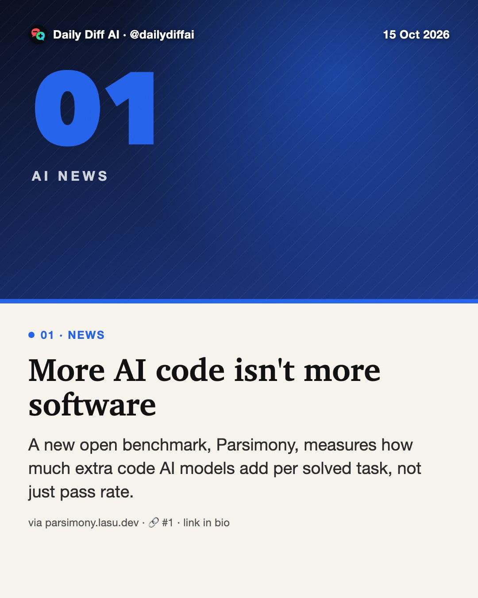
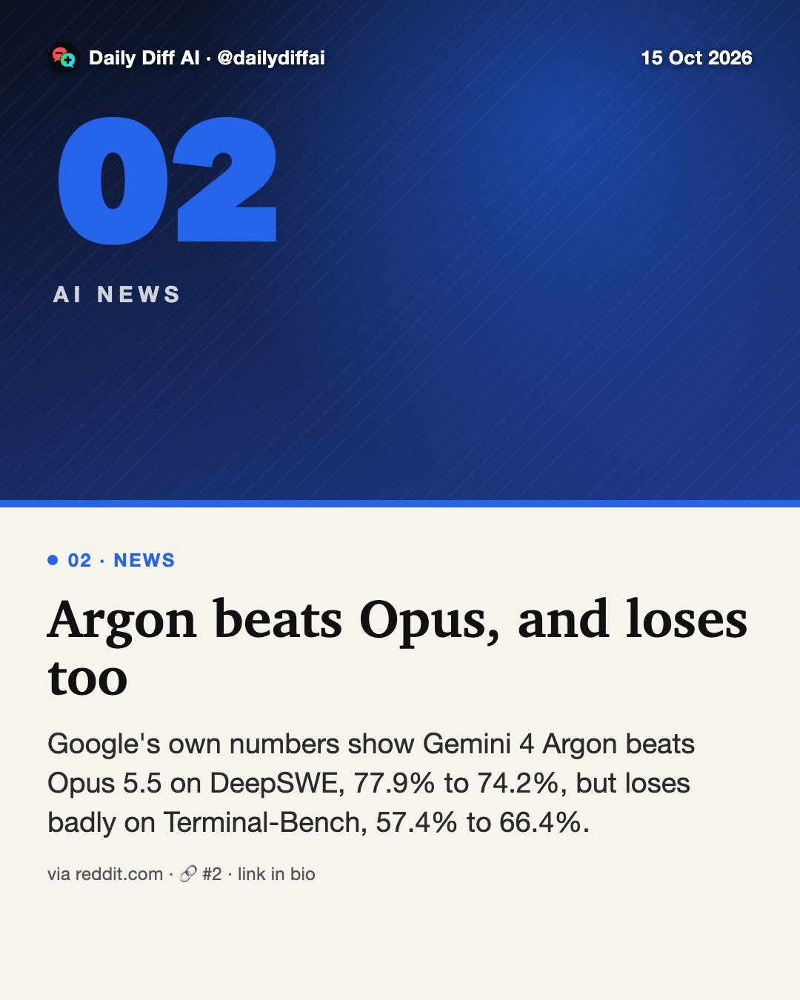
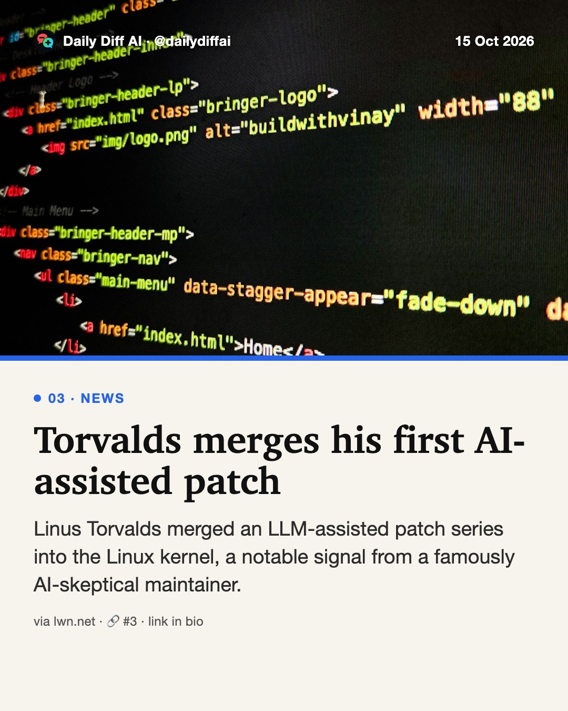
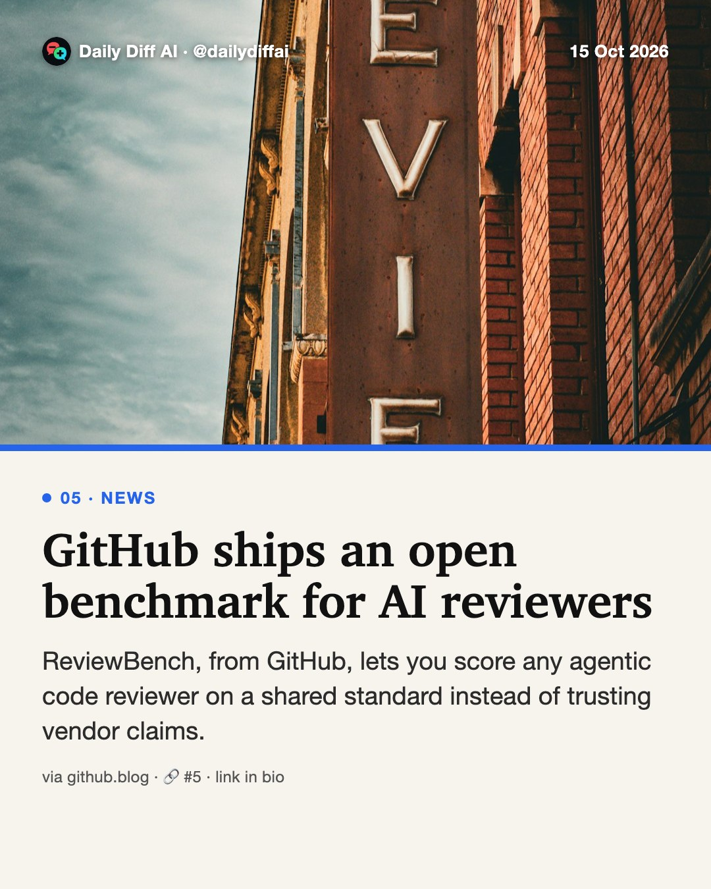
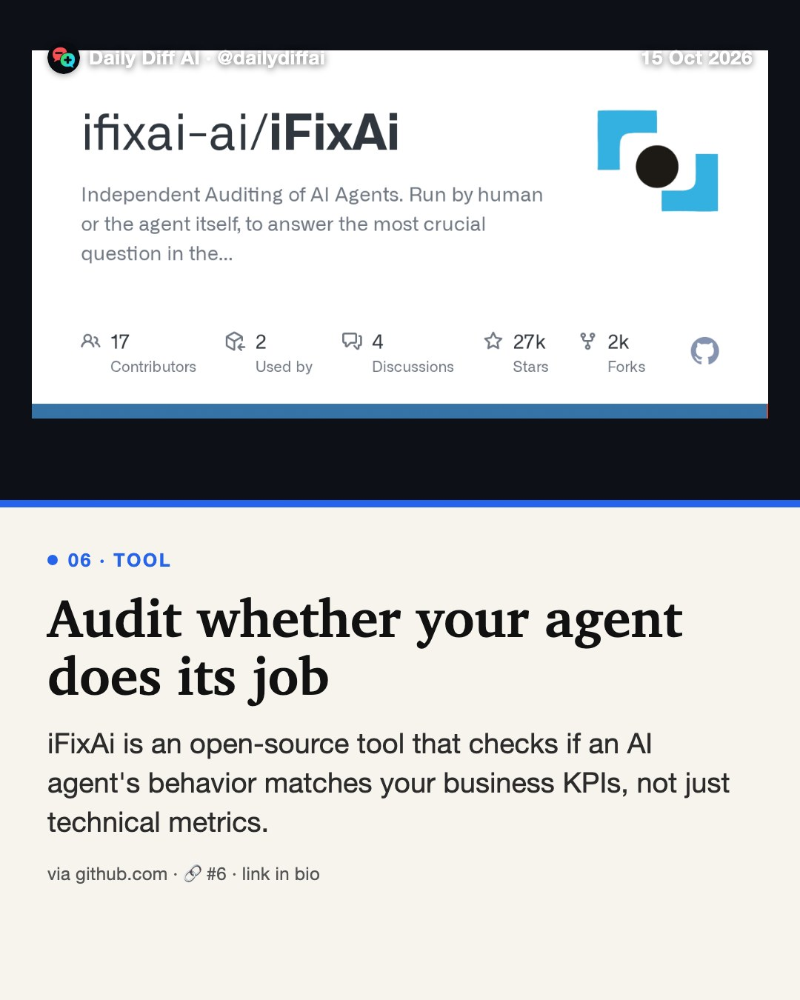

Daily Diff AI

More AI code isn't more software
A new open benchmark, Parsimony, measures how much extra code AI models add per solved task, not just pass rate.
Read on parsimony.lasu.dev →
Argon beats Opus, and loses too
Google's own numbers show Gemini 4 Argon beats Opus 5.5 on DeepSWE, 77.9% to 74.2%, but loses badly on Terminal-Bench, 57.4% to 66.4%.
Read on reddit.com →
Torvalds merges his first AI-assisted patch
Linus Torvalds merged an LLM-assisted patch series into the Linux kernel, a notable signal from a famously AI-skeptical maintainer.
Read on lwn.net →AI can now decompile old games at scale
AI-powered decompilation is letting developers port, mod and recompile old games, raising the same risk for any shipped closed-source binary.
Read on popcar.bearblog.dev →
GitHub ships an open benchmark for AI reviewers
ReviewBench, from GitHub, lets you score any agentic code reviewer on a shared standard instead of trusting vendor claims.
Read on github.blog →
Audit whether your agent does its job
iFixAi is an open-source tool that checks if an AI agent's behavior matches your business KPIs, not just technical metrics.
Read on github.com →Make agents verify their own code
Have coding agents write and run their own tests before handing you a diff, so verification scales instead of manual review.